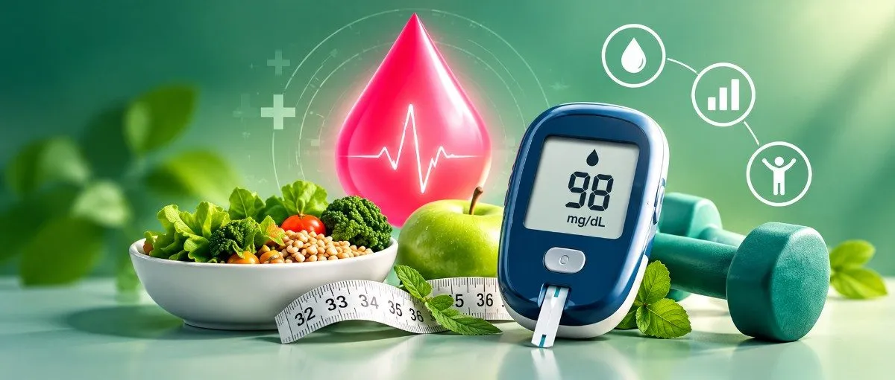
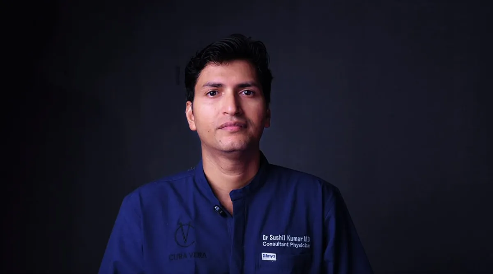
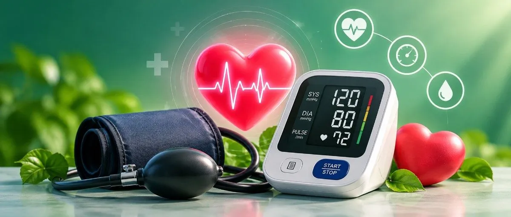
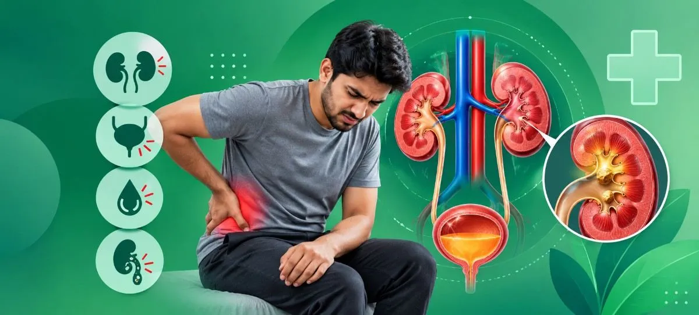
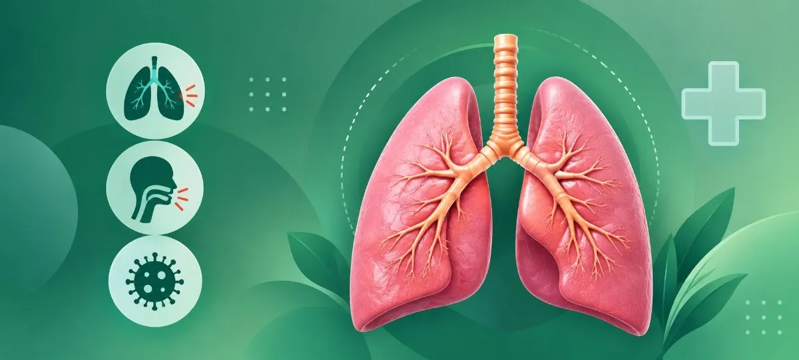

Diabetes & Metabolic Health
Diabetes, related complications, and ongoing metabolic health management.
A passionate and experienced medical professional with immense exposure in Clinical, Academic and Patient care fields. He has worked as a Senior Resident of Gastroenterology & Nephrology at MLN Medical College, Senior Resident of General Medicine at AIIMS Gorakhpur, and Assistant Professor at Maharshi Devraha Baba Autonomous State Medical College, Deoria. His passion and experience in the field will ensure that he delivers empathetic and patient-centric medical care.

Internal medicine focuses on evaluating health concerns, understanding how symptoms may connect, and guiding appropriate investigations, treatment, or specialist referral when needed.

Diabetes, related complications, and ongoing metabolic health management.

Evaluation and care planning for hypertension and associated concerns.
Assessment of thyroid-related symptoms and management planning.

Medical evaluation of kidney conditions and urinary complaints.
Digestive concerns, gastrointestinal symptoms, and liver-related conditions.

Assessment of breathing concerns and common respiratory disorders.
Clinical evaluation of fever, infections, and related symptoms.
Initial medical evaluation and coordination of care where appropriate.
Assessment of multiple or overlapping medical problems.
According to the professional introduction provided, Dr. Sushil Kumar is a physician with postgraduate training in Medicine from the Institute of Medical Sciences, Banaras Hindu University (IMS-BHU). His clinical experience includes senior residency roles in Gastroenterology, Nephrology, and the Department of Medicine at AIIMS Gorakhpur, followed by an Assistant Professor role at Maharshi Devraha Baba Medical College, Deoria.
He currently practices as a Consultant Physician in Deoria, providing care for a broad range of medical conditions. The aim of this page is to help patients understand the practice and prepare for a consultation—not to replace an individual medical assessment.
A consultation should feel unhurried, understandable and evidence-informed.

Postgraduate training in Medicine at IMS-BHU, Varanasi.

Senior residency in Gastroenterology, Nephrology and Medicine at AIIMS Gorakhpur.

Assessment and tests guided by your symptoms, history and clinical findings.
Plain-language explanation of your condition, plan and follow-up.
Good consultations give you space to explain what you are experiencing, discuss relevant history, and understand the next steps in your care.
Share your symptoms, health history, current medicines, and questions. Bring any recent reports that may be relevant.
Your clinician may assess your concerns and decide whether examination, tests, treatment, or a specialist opinion is appropriate.
Discuss the plan, follow-up needs, warning signs, and when to seek urgent medical attention.
Tests and treatment are based on individual clinical assessment. No particular outcome or treatment is guaranteed.
For follow-ups, report reviews and routine concerns, consult by video or phone from the comfort of your home. A clinic visit is necessary for emergencies or when a physical examination is needed.
Select "Video call" in the form below and choose your preferred date and time.
The clinic will confirm your slot on WhatsApp or by phone and send the video link. Add fee / platform
Keep a photo or PDF of your previous reports and medicine list ready, and join with a stable internet connection.
Consultations are available in Hindi and English. An online consultation cannot always replace a complete physical examination, and the doctor may ask you to visit the clinic if needed.
Send a request with your preferred date and the main reason for consultation. The clinic must review your request and confirm availability before an appointment is booked. Please do not include sensitive medical details.
Urgent concern? Do not wait for a website response. Contact local emergency services or go to the nearest emergency department.
Use these learning cards as a starter for the future health library. Educational content should be medically reviewed before publication.
How a symptom timeline, medicines list, and recent reports can support a more useful conversation.
Read patient guidanceGeneral ideas for discussing nutrition, activity, sleep, and other everyday health habits with a clinician.
Explore FAQsSleep patterns can be useful context when discussing fatigue, wellbeing, and ongoing health concerns.
Request a consultationGeneral information for visitors. Your specific care plan depends on a consultation and clinical assessment.
The supplied profile lists MBBS and MD (Medicine), which indicate training in modern medicine (allopathy), not homeopathy. Verify the qualifications and registration with the relevant medical authority before publishing.
The supplied profile lists diabetes, hypertension, thyroid disorders, kidney and urinary diseases, rheumatology-related concerns, gastrointestinal and liver diseases, neurological concerns, respiratory problems, fever, infections, and multiple or complex medical problems.
No. The request is saved for clinic review. The clinic must contact you to confirm availability; submission alone does not book a slot.
No. Do not wait for a website reply if you may be experiencing a medical emergency. Contact local emergency services or go to the nearest emergency department.
The supplied introduction states that Dr. Sushil Kumar currently practices in Deoria, Uttar Pradesh. Add the verified clinic address, timings, and contact number before publishing.
You can choose "Video call" or "Phone call" in the form and send a request. The clinic will confirm the slot, fee and video link. Add verified details
It is suitable for follow-ups, report reviews and routine concerns. If you have emergency symptoms such as chest pain, difficulty breathing or fainting, do not wait for an online consultation — go to the nearest emergency department immediately.
Add verified timings — e.g. Mon–Sat, morning and evening sessions. Please confirm by phone before visiting.
Bring previous prescriptions, lab reports, discharge summaries, and a list of your current medicines. Arriving about 10 minutes early helps with registration.
Appointments help reduce waiting time. Walk-in availability depends on the day's schedule — please confirm with the clinic.
Replace the highlighted placeholders with verified details before publishing.
This form sends an appointment request for clinic review. The clinic must contact you to confirm availability; submitting the form does not book a slot.